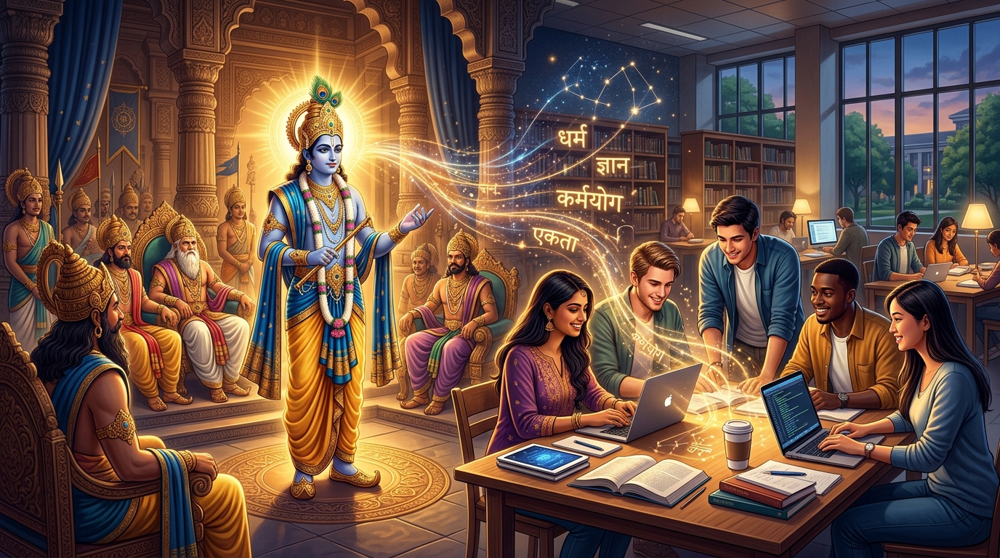

From Ancient Battlefields
to Modern Campus Peace
When group project tensions boil, deadlines clash, or teammates freeze in silence—confrontation is not your only weapon. Discover how Sri Krishna’s legendary embassy to Hastinapura provides a bulletproof psychological and strategic blueprint to solve conflicts with grace, clarity, and victory.

The "Kurukshetra to Campus" Model
In the Mahabharata, war was not the first instinct. Before Kurukshetra erupted, Krishna personally stepped into the lion's den as a mediator. Here is how we bridge that epic event into your everyday college journey:
Mahabharata Situation
Krishna visits the Kaurava court. Despite knowing Duryodhana's stubborness, he seeks five small villages to avert catastrophic war.
Strategic Principle
Always negotiate from strength, moral clarity, and objective benefit rather than wounded pride. Exhaust calm dialogue first.
Modern Student Dilemma
Your group mates are yelling in a WhatsApp chat or freezing each other out over presentation slides and tech choices.
Actionable Resolution
Structured 5-step mediation checklist + word-for-word copyable message templates to restore harmony and ace the submission.
The Four Upāyas of Campus Harmony
Ancient strategic treatises outline four progressive methods (चतुरूपाय) to resolve discord. Learn when and how to deploy each:
Sāma (Conciliation)
Empathetic listening, cordial speech, acknowledging positive intent, and finding common goals.
Dāna (Fair Concession)
Strategic trade-offs, win-win workload rebalancing, and offering incentives or credit sharing.
Bheda (Perspective Shift)
Differentiating personalities, separating facts from wounded egos, and deconstructing complex deadlock into distinct independent parts.
Daṇḍa (Firm Accountability)
Setting non-negotiable boundaries, invoking clear rubric rules, and escalating to institutional authority (Professor/TA) as a transparent last resort.
Select Your Student Dilemma
Choose a common university challenge below, or search your specific keywords. Each dilemma maps to a precise episode in the epic with tactical next steps.
The Doota Simulator: Stepping Into Krishna's Chariot
Can you prevent a catastrophic group project fallout? Test your mediation instincts through a 3-stage interactive crisis simulation.
What Is Your Conflict Archetype?
When pressure mounts in your university group, which epic personality governs your instincts? Take this quick 4-question diagnostic to find out and refine your leadership.
Why the Peace Mission Matters
Why did Krishna travel to the Kaurava court when everyone—including Draupadi and Sahadeva—knew Duryodhana was stubborn?
Moral Primacy (Dharma-Sthāpanā)
Krishna explained that even if peace seems impossible, one must make the highest effort so that history and conscience record that every doorway to harmony was tested before conflict was unleashed.
Protecting the Vulnerable
In any campus project battle, anger hurts everyone—especially teammates caught in the crossfire who just want to pass the course. Krishna’s diplomacy protected millions of innocents.
Emotional Steadfastness (Sthitaprajña)
When Duryodhana tried to capture Krishna in the assembly hall, Krishna did not scream or panic. He smiled with divine composure. Never let another person's aggression hijack your poise.